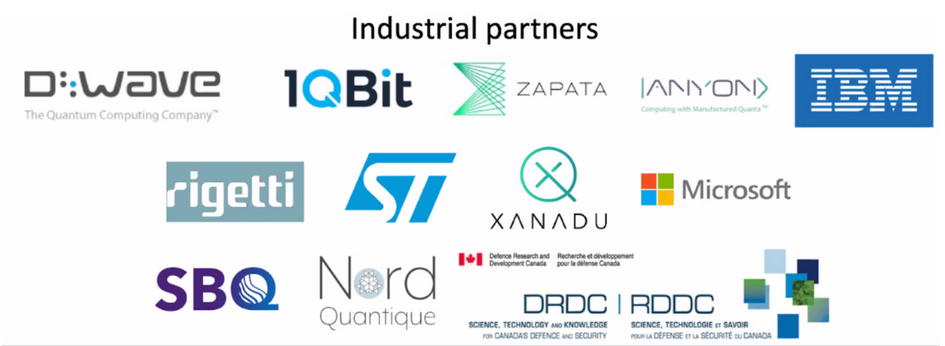

Why Quantum Computing?¶
I’m willing to bet that most of you have either a smartphone, tablet, laptop, or all three with you right now! By comparison, people ten or fifteen years older than you (such as myself) had a flip phone until high school and likely got their first laptops in college: technology has advanced so much in the last 15-20 years! Everything we have today, from machine learning and AI to ultra-versatile smartphones and the IoT, comes by grace of increased computing power multiplied by increased accessibility.
Classical computing has historically benefited from yearly exponential increases in processing power: improvements in chip technology have enabled the rapid miniaturization of silicon-based transistors (these are the little electronic switches that make everything work). Commonly known as Moore’s law, these processing advancements have enabled the number of transistors in a single chip to double every 2 years.
This is why, in my lifetime at least, new and more powerful computers have come out every year without fail. Modern silicon-based transistors are now reaching 10-20 nanometers (a nanometer is about the size of a DNA strand!) in diameter, which approaches something called the quantum limit. Remember how we discussed that very small objects will start exhibiting quantum weirdness? Well, the quantum limit is the threshold at which this begins to occur. Conventional transistor fabrication relies on classical behavior, so this poses a problem when we want to increase computational power the way we have always done: by making things smaller.
We’re expected to reach the quantum limit in the next decade. This will likely cap conventional computational power. There are many ways scientists are looking to get around this: there have been attempts to create transistors with quantum behaviour (such as single-electron transistors) as well as create mini quantum computers (called quantum annealers) that can solve highly specialized problems efficiently.
There are problems in materials, science, chemistry, medicine, and finance that are far too complex to solve on classical computers. The hope is that quantum computing will be able to bridge that gap! Some of the things that people hope to explore with the help of quantum computers are:
Processes connected with protein folding, such as those encountered in Alzheimer’s disease, vaccine development, and crop improvement research.
Accurate risk modelling for the global economy, something that banks cannot currently do because data sets are too large to process efficiently
New algorithms to improve Artificial Intelligence technologies
Rapid and personalized drug design for cancer through optimization algorithms
One of IBM’s superconducting quantum computers
Let’s get some terminology out of the way. There are many steps between a classical computer an a universal quantum computer, which is a computer capable of tackling any problem given to it with the full power of quantum superposition states. Universal quantum computing is still a distant goal. Meanwhile, companies such as IBM and Google are investing billions of dollars into building a quantum computer capable of outperforming a classical one—that is, demonstrating quantum supremacy.
IBM’s latest quantum computer contains 65 qubits, which is quite a lot —mathematicians believe that a computer with 300 qubits could perform more simultaneous calculations than there are atoms in the universe! It is not known with certainty how many qubits are needed to build a computer capable of remonstrating quantum supremacy. It’s a very tricky thing to do, and the race is cutthroat—just last year, Google hastily announced that it had achieved this only to be disputed by IBM researchers almost immediately.
In fact, you will be running some simulations of quantum circuits on one of IBM’s quantum computers as part of this camp!
Quantum objects are extremely sensitive to environmental influence. The superposition states that are so critical for quantum computers are also extremely sensitive. Any interaction with the environment will cause the state to change irreversibly. This poses a problem for storing or transmitting quantum information reliably. Quantum circuits today are extremely noisy, which makes calculations very prone to errors. Quantum error correction is the process of identifying and fixing these errors. It is the difference between “a $100 million, 10,000-qubit quantum computer being a random noise generator or the most powerful computer in the world,” according to the founder of quantum computing company Rigetti.
In a classical computer, errors are traditionally fixed by a process called encoding, in which a state is copied and transmitted alongside these copies of itself. The copying makes it harder for errors to propagate. Since quantum states can’t be copied, this poses a problem. The approach to correcting errors has to be tweaked!
Quantum error correction is a very complicated, ever-evolving field. The current approach involves entangling multiple qubits together, then applying special algorithms to find and fix specific errors. Since manipulating individual qubits can introduce errors, unless that error rate falls below a certain level, then entangling more qubits with the original one only adds more noise to the system. The threshold for error is extremely low for quantum computing to work—an error of lower than 1% is barely acceptable.
This is a very exciting, very tot hopic in quantum computing right now! It’s the next generation of engineers and mathematicians that will likely make the most progress in this field.
An artist’s depiction of quantum error correction.
Quantum Computing: An Industry of the Future!¶
While we don’t have a fully equipped quantum computer available to us yet, there are many people who are working hard to solve this problem.
L-R: Dr. Talia Gershon (IBM), Dr. Robert Raussendorf (UBC) and Jessica Pointing (Harvard) are all highly impactful contributors in quantum computing!
Click here to learn more about some groundbreaking researchers in the field today!
There is still lots of work to do, and we need many new people with new ideas to enter the field and help out! There are tons of companies beginning to explore the field of quantum computing. Some of the companies we have here in Canada include:
